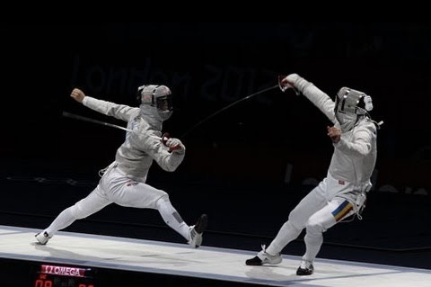
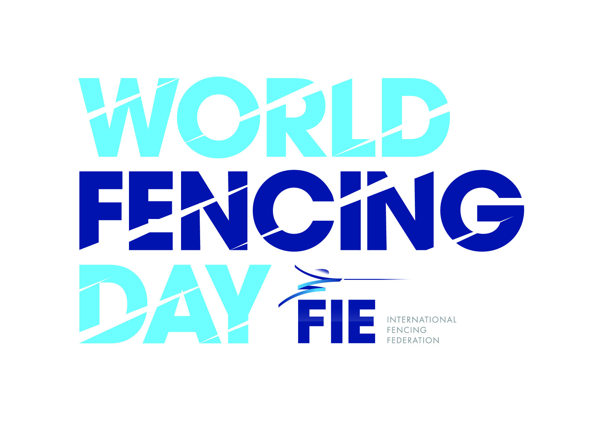

Sabre fencing has a history of approximately 200 years, it is derived from military swordsmanship. The first purpose-made practice sabre was the 16th century German düsak, a heavy curved sword.

A düsak replica
But the practice swords used in the army were heavy weapons and in the late 19th century an Italian fencing master developed a lightweight sporting sabre that could be manipulated with the speed and accuracy. By the early 1900s, Italian masters had introduced the principles of the lightweight sabre to all fencing countries.

An early sabre guard
Initially, because sabre was regarded as essentially a military weapon used in preparation for combat, the whole body was the target, but after WWI the FIE (International Fencing Federation) adopted the modern target area. In 1986 it became the last fencing weapon to be electrified (Electrified weapens help the referee to judge whether the fencer is hit by the other).

September 12 is World Fencing Day, it aims to unify the fencing community around the world, it's starts from November 29, 1913 founded by Fédération Internationale d'Escrime (International Fencing Federation).
